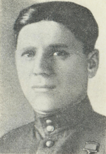

ЗАИКА ГРИГОРИЙ АНДРЕЕВИЧ (13 октября 1909 - 04 сентября 1960) - подполковник Советской Армии, участник Великой Отечественной войны, Герой Советского Союза (1943).
Григорий Заика родился 13 октября 1909 года в селе Чагов (ныне - Оратовский район Винницкой области Украины). После окончания семи классов школы работал в колхозе. В 1931 году Заика был призван на службу в Рабоче-крестьянскую Красную Армию. В 1936 году он окончил ускоренные курсы младших лейтенантов при Киевском пехотном училище. С апреля 1942 года - на фронтах Великой Отечественной войны. К январю 1943 года старший лейтенант Григорий Заика командовал 5-й стрелковой ротой 272-го стрелкового полка 123-й стрелковой дивизии 67-й армии Ленинградского фронта. Отличился во время прорыва блокады Ленинграда.
Во время прорыва блокады Ленинграда рота Заики в течение семи дней беспрерывно вела бои, отбив массированные контратаки пехотных и танковых частей противника. 19 января 1943 года рота захватила укреплённые позиции противника и вышли к шоссейной дороге Синявино-8-я ГЭС. Заика лично участвовал во всех боях, уничтожив 11 вражеских солдат и офицеров, был четыре раза ранен, но продолжал сражаться.
Указом Президиума Верховного Совета СССР от 10 февраля 1943 года за «образцовое выполнение боевых заданий командования на фронте борьбы с немецкими захватчиками и проявленные при этом мужество и героизм» старший лейтенант Григорий Заика был удостоен высокого звания Героя Советского Союза с вручением ордена Ленина и медали «Золотая Звезда» за номером 887.
После окончания войны Заика продолжил службу в Советской Армии. В 1945 году он окончил курсы «Выстрел». В 1959 году в звании подполковника Заика был уволен в запас. Вернулся на родину, работал директором сельскохозяйственной базы. Умер 4 сентября 1960 года, похоронен в родном селе.
Был также награждён орденами Красного Знамени и Отечественной войны 1-й степени, рядом медалей.
ЗЕЛЕНОВ НИКОЛАЙ АНДРИАНОВИЧ (5 сентября 1917 - 29 июня 1944 гг.)
Родился 5 сентября 1917 года в деревне Поповка (Красносельский район Костромской области). Окончил 7 классов Красносельской школы, Костромской землеустроительный техникум. Работал землемером на Украине. С 1936 года в рядах Красной Армии. В 1937 году окончил Луганское военное авиационное училище лётчиков. Служил в ВВС Ленинградского военного округа. Участник Советско-Финляндской войны 1939-1940 гг. в составе 26-го ИАП, летал на И-15бис и И-153. Выполнил более 10 боевых вылетов на штурмовку войск противника, сбитых самолётов противника не имел.
С июня 1941 года лейтенант Н. А. Зеленов на фронтах Великой Отечественной войны в составе 194-го ИАП, летал на истребителе И-153. В сентябре 1941 года направлен заместителем командира эскадрильи в 127-й ИАП, где летал на И-153 и И-16. С декабря 1941 года сражался уже в 154-м ИАП (22 ноября 1942 года преобразован в 29-й Гвардейский ИАП), летал на американских Р-40 ("Томагаук", "Киттихаук") и Як-7.
К июлю 1942 года заместитель командира эскадрильи 154-го истребительного авиационного полка (8-я Армия, Ленинградский фронт) старший лейтенант Н. А. Зеленов совершил 382 боевых вылета, провёл 47 воздушных боёв, сбил лично 9 и в составе группы 10 самолётов противника (в наградном листе говорится о 9 личных и 8 групповых победах). Указом Президиума Верховного Совета СССР от 10 февраля 1943 года удостоен звания Героя Советского Союза с вручением ордена Ленина и медали "Золотая Звезда" (№ 802).
В июле 1943 года переведён командиром эскадрильи в 14-й Гвардейский ИАП (275-я ИАД, 13-я Воздушная армия), где летал на Як-1 и Як-9. 29 июня 1944 года Гвардии капитан Н. А. Зеленов погиб в авиационной катастрофе в районе города Выборга. К тому времени произвёл 606 боевых вылетов, провёл 117 воздушных боёв, в которых сбил лично 30 и в составе группы 12 самолётов противника.
Похоронен в Ленинграде (ныне Санкт-Петербург) на Шуваловском кладбище. Приказом Министра обороны СССР от 4 мая 1967 года навечно зачислен в списки личного состава Гвардейского истребительного авиационного полка. Именем Героя названа улица в городе Волгореченске (Костромская область), его имя увековечено на мемориале погибшим землякам.
Награждён орденами: Ленина (10.02.1943), Красного Знамени (26.02.1942, 21.06.1944), Отечественной войны 1-й степени (__.01.1943); медалями, в том числе "За отвагу" (10.02.1940), "За оборону Ленинграда" (1943).
ЛАПШОВ ИВАН АНТОНОВИЧ 1917-1978 Сержант, старшина роты 342-го полка 136-й стрелковой дивизии Герой Советского Союза (1943)
Участник Великой Отечественной войны. Сержант 342-го стрелкового полка (67-я армия, Ленинградский фронт). Отличился при прорыве блокады Ленинграда 12.01.1943 года, преодолев по льду реку Неву в районе села Марьино (Кировский район Ленинградской области). После Великой Отечественной войны жил и работал в Москве.
Лапшов Иван Антонович. Родился в 1917 г. в деревне 3-я Александровна Алешковского района Воронежской области. Русский. Член КПСС с 1942 г. Жил в Москве, работал автослесарем на фабрике-кухне № 8. В 1939 г. был призван в армию. Во время великой Отечественной войны сражался на Ленинградском фронте. Оборонял полуостров Ханко. Участвовал в прорыве блокады города на Неве. Звания Героя Советского Союза удостоен 10 февраля 1943 г. После войны уволился в запас, жил и работал в Москве. В 197В г. умер.
342-й стрелковый полк, в котором служил Лапшов, располагался в лесном массиве, между Шлиссельбургом и 8-й ГЭС, снабжавшей Ленинград электроэнергией, недалеко от того места, где Черная речка впадает в Неву. На другом, высоком, берегу Невы находились гитлеровцы. Стремясь укрепить свою оборону на шлиссельбургско-синявинском выступе, они создали опорные пункты и узлы сопротивления, понастроили всюду доты и дзоты, установили минные поля, опутали подступы к траншеям колючей проволокой. Крутой скат левого берега фашисты залили водой, и он превратился на морозе в ледяную гору.
На рассвете 12 января 1943 года началось форсирование Невы. Гитлеровцы, считавшие ледяной берег неприступным, растерялись, когда внезапно увидели перед собой советских воинов. Используя временное замешательство противника, Лапшов с группой бойцов ворвался в первую траншею. Автоматным огнем и гранатами наши воины решительно расчистили себе путь, проникли по ходам сообщения в глубину обороны противника.
Продвигаясь по траншее, Лапшов заметил фашиста с гранатой в руке. Медлить было нельзя. И советский боец, действуя предельно быстро, послал короткую автоматную очередь. Гитлеровец, словно споткнувшись, рухнул на землю. Лапшов, не задерживаясь, побежал дальше. На повороте траншеи он буквально нос к носу столкнулся с другим гитлеровцем. И снова сержант опередил противника. Сделав шаг назад, он изо всех сил ударил фашиста прикладом автомата.
В упорных боях, нередко переходивших в рукопашные схватки, наши подразделения сумели захватить и значительно расширить два плацдарма. За первые сутки 136-я стрелковая дивизия, почти целиком состоявшая из участников героической обороны полуострова Ханко, продвинулась вперед на 4—5 километров.
Группа бойцов во главе с Иваном Лапшовым, преследуя отступающих гитлеровцев, далеко оторвалась от своего подразделения и оказалась под ударами превосходящих сил врага. Перейдя к обороне, пятеро наших воинов с трудом отбивали атаки фашистов. Но вскоре на помощь группе подоспела наша рота, и гитлеровцы были окружены. Некоторые из них, вырвавшись из окружения, попытались скрыться в близлежащей деревне. Группа Лапшова стала их преследовать. Заметив, что фашисты забежали в большой дом, стоявший почти на самом краю деревни, сержант резко рванул дверь и, вскинув автомат, громко крикнул: — Хенде хох!
Гитлеровцы стали поднимать руки. В этот момент Лапшов заметил, что в дальнем углу, в полумраке, один из фашистов направляет на него карабин, готовясь выстрелить. Сержант, быстро повернувшись, сразу же нажал на спусковой крючок автомата, и на лице вражеского стрелка отразился смертельный ужас, карабин выпал из его рук. Казалось, сейчас последует очередь, и с врагом будет покончено, но, к удивлению Лапшова, автомат молчал. С беспощадной отчетливостью старшина роты понял, что в диске не осталось больше ни одного патрона. По существу, Лапшов оказался безоружным, но хладнокровие и выдержка не изменили ему. Продолжая держать фашистов под дулом автомата, он делал вид, что сразу же откроет огонь, как только кто-нибудь из них пошевельнется.
Все это произошло чрезвычайно быстро, в считанные секунды. Когда в дверях показались другие воины группы, сержант приказал им разоружить врага. Вскоре гитлеровцы с поднятыми руками вышли на улицу.
Макаренков, Иван Михайлович МАКАРЕНКОВ ИВАН МИХАЙЛОВИЧ (1918-2004) Старшина, механик-водитель 549-го танкового полка 61-й танковой бригады. Герой Советского Союза (1943)
МАКАРЕНКОВ ИВАН МИХАЙЛОВИЧ (1918-2004) Старшина, механик-водитель 549-го танкового полка 61-й танковой бригады. Герой Советского Союза (1943)
Родился в 1918 году в деревне Ольговка (ныне Добринский район Липецкой области) в семье крестьянина. По окончании школы и курсов механизаторов он стал работать трактористом. В 1939 году Иван Михайлович был призван в армию. Сначала служил шофером, а после окончания специальных курсов механиком–водителем танка.
С первых дней войны Макаренков сражался с врагом на Юго–Западном фронте, где ему пришлось отходить вместе со своей частью на восток. В одном из боев танк был подбит, но Иван Михайлович продолжал сражаться как пехотинец. В бою под Житомиром он был ранен осколком мины и попал в госпиталь. После выздоровления был зачислен механиком–водителем танка 549–го танкового батальона, 61 отдельной танковой бригады, Ленинградского фронта.
Экипаж танка «Т–60» называли «малюткой», так как он состоял из двух человек: командира и механика водителя. Командиром экипажа был Осатюк Дмитрий Иванович, а механиком–водителем – Иван Михайлович. Макаренков как опытный водитель быстро достиг того, что машина в бою «танцевала», и это неоднократно выручало экипаж.
12 января 1943 года танк Осатюка и Макаренкова «увел за собой» с поляны, где шел бой, три тяжелых фашистских танка к артиллеристам в рощу. Они, в свою очередь, поняли замысел экипажа и поддержали его огнем, уничтожив два танка, третьему удалось скрыться. Экипаж открыл огонь по вражеской пехоте. Контратака фашистов была сорвана, наше наступление продолжалось.
14 января рота, в которой служил Макаренков, с группой пехотинцев прикрывала отвоеванный накануне у врага рубеж. Танк Осатюка и Макаренкова внезапно нанес большой урон врагу; уцелевшие сдались в плен.
21 января в бою у Синявино (Ленинградская область) танк Осатюка и Макаренкова участвовал в прорыве кольца блокады Ленинграда. В машину попал вражеский снаряд. Иван Михайлович был тяжело ранен: ему оторвало ступню левой ноги и срезало пальцы на руке.
Указом Президиума Верховного Совета СССР от 10 февраля 1943 старшине Макаренкову Ивану Михайловичу присвоено звание Героя Советского Союза.
В ноябре 1943 года Иван Михайлович демобилизовался по состоянию здоровья и вернулся в родные края. Сначала работал в Хворостянке, а затем переехал в Липецк и с 1948 года до пенсии работал на Новолипецком металлургическом комбинате.
В мае 2004 года Иван Михайлович умер. Похоронен в Липецке на Косыревском кладбище.
На Аллее Героев в поселке Добринка установлен бюст Герою.
МАЦИЕВИЧ ВАСИЛИЙ АНТОНОВИЧ (13 апреля 1913 - 10 сентября 1981) Командир эскадрильи 26-го истребительного авиационного полка 7-го истребительного авиационного корпуса Войск ПВО страны, капитан. Герой Советского Союза (1943)
Родился 13 апреля 1913 года в селе Песчаный Брод, ныне Добровеличковского района Кировоградской области, в семье рабочего. Окончил 2 курса Ленинградского морского техникума. С 1933 года в рядах Красной Армии. В 1936 году окончил Оренбургскую военную авиациоенную школу лётчиков, год спустя - курсы усовершенствования командного состава.
Участвовал в походе советских войск в Западную Украину и Западную Белоруссию 1939 года и Советско - Финляндской войне 1939 - 1940 годов. Награждён орденом Красного Знамени.
С июня 1941 года старший лейтенант В. А. Мациевич в действующей армии. Осенью 1941 года участвовал в перехвате немецких самолётов во время ночных налётов на Ленинград.
К июню 1942 года командир эскадрильи 26-го истребительного авиационного полка (7-й истребительный авиационный корпус, Войска ПВО страны) капитан В. А. Мациевич совершил 196 боевых вылетов (138 днём и 58 ночью), в 44 воздушных боях сбил 5 самолётов противника, ещё 13 самолётов вместе с товарищами уничтожил на земле. Лётчики его эскадрильи выполнили 1192 боевых вылета, провели 147 воздушных боёв, сбили лично 16 и в составе группы 6 самолётов противника.
14 февраля 1943 года за мужество и воинскую доблесть, проявленные в боях с врагами, удостоен звания Героя Советского Союза.
Всего выполнил 215 боевых вылетов, проведя около 50 воздушных боёв, сбил 5 самолётов противника лично и 2 в составе группы.
После окончания войны продолжал служить в ВВС. В 1956 году окончил Военную академию Генерального штаба. С 1964 года Гвардии полковник В. А. Мациевич - в запасе. Жил и работал в Ленинграде. Умер 10 сентября 1981 года.
Награждён орденами: Ленина, Красного Знамени (дважды), Александра Невского, Отечественной войны 1-й степени, Красной Звезды (дважды); медалями.
 МОЛОДЦОВ ДМИТРИЙ СЕМЕНОВИЧ (1908 – 13 января 1943) - стрелок 270-го стрелкового полка (136-я стрелковая дивизия, Ленинградский фронт), красноармеец.
МОЛОДЦОВ ДМИТРИЙ СЕМЕНОВИЧ (1908 – 13 января 1943) - стрелок 270-го стрелкового полка (136-я стрелковая дивизия, Ленинградский фронт), красноармеец.
В Красной Армии в 1939-40 и с июня 1941 года. 13 января 1943 года в бою за Синявинские высоты у поселка Марьино (ныне в черте города Кировск Ленинградской области) стрелковой роте 270-го стрелкового полка 136-й стрелковой дивизии Ленинградского фронта, в которой находился стрелок красноармеец Д.С. Молодцов, была поставлена задача уничтожить батарею 305-миллиметровых пушек, обстреливавших наши позиции. Продвижение роты было остановлено пулеметным огнем из дзота, прикрывавшим позиции батареи. Молодцов добровольно вызвался подавить вражескую огневую точку. Он подобрался к дзоту и несколькими гранатами заставил замолчать пулемет противника. Но когда рота перешла в атаку, пулемет заработал снова. Не имея гранат, отважный воин закрыл своим телом амбразуру дзота. Ценою жизни способствовал выполнению боевой задачи. Рота захватила батарею противника, двенадцать автомашин, несколько пулеметов, много снарядов и различного военного имущества.
Указом Президиума Верховного Совета СССР от 10 февраля 1943 года за образцовое выполнение боевых заданий Командования на фронте борьбы с немецкими захватчиками и проявленные при этом отвагу и геройство красноармейцу Молодцову Дмитрию Семеновичу присвоено звание Героя Советского Союза (посмертно).
ОСАТЮК ДМИТРИЙ ИВАНОВИЧ (08 ноября 1917 – 25 мая 1999) Лейтенант, командир роты 549-го танкового батальона 61-й танковой бригады. Герой Советского Союза (10.02.1943)
Родился 8.11.1917 в с. Могильное ныне Гайворонского района Кировоградской обл. в семье крестьянина. Украинец. Член КПСС с 1943. Окончил кооперативный техникум. Работал счетоводом в колхозе. В Советской Армии с 1939. В 1941 окончил Сызраньское танковое училище.
В боях Великой Отечественной войны с 1941. Под командованием комсомольца лейтенанта Осатюка танковая рота 549-го танкового батальона (61-я танковая бригада, 67-я армия, Ленинградский фронт) 18.01.43 первой соединилась с войсками Волховского фронта, разрывая кольцо блокады Ленинграда. Звание Героя Советского Союза присвоено 10.02.43.
После войны продолжал службу в армии. В 1947 окончил Высшую офицерскую бронетанковую школу. С 1959 военный комиссар г. Кировоград. С 1971 полковник Осатюк - в запасе. Награжден орденами Ленина, Отечественной войны 1 и 2 степеней, Красной Звезды, медалями. Имя Героя носит пионерский отряд школы № 17 в Ленинграде.
В день начала операции по прорыву блокады Ленинграда танковая рота лейтенанта Останюка из состава 549-го танкового батальона 61-й отдельной танковой бригада 67-й армии Ленинградского фронта, воевавшая на танках Т-60, благодаря малому весу своих танков, форсировала Неву по тонкому в том году льду. Преодолев замёрзшие торфяные болота и вышла на опушку леса. Впереди была поляна, изрытая воронками, за которой виднелась гряда Синявинских высот. С раннего утра 13 января танкисты, сопровождая морских пехотинцев, бросились в дальнейшее наступление.
Останюк повёл в бой свою роту, нацелив её на гитлеровскую пехоту.И тут случилось так, что немецкие танки Pz-IV отсекли командирский Т-60, который был бессилен против их толстой брони. Лейтенант, постреливая для острастки из пушки, приказал механику-водителю Макаренкову маневрировать задним ходом, увертываясь от огня вражеских машин и в то же время заманивая их к лесу. Там располагалась батарея старшего лейтенанта Романова. Артиллеристы видели, как умело «танцует» танк, и поняли его уловку. Когда Т-60 метнулся в сторону, а немецкие танки – за ним, они подставили свои борта. Романов мгновенно открыл огонь. Сразу же загорелись две гитлеровские машины, затем и третья.
Останюк установил по радио связь со своей ротой, узнал, что танкисты загнали пехоту противника в огромный котлован. Гитлеровцы упорно сопротивлялись, забрасывали наши танки гранатами, заставляя их отходить от обрыва. Медлить было нельзя: фашисты успеют окопаться, вызвать подкрепление. Останюк и Макаренков придумали трюк. Макаренков стал как можно ближе «накатываться» к обрыву и немедленно отходить назад по своему следу. Проделав это несколько раз, он проложил хорошо трамбованную колею. После этого, взяв стремительный разбег, Т-60 прыгнул с обрыва в котлован, в гущу вражеской пехоты и стал утюжить её гусеницами. Лейтенант Останюк крушил врага огнём. Он вырвал опорную чеку гашетки – пулемёт заработал самостоятельно, сам же бил из пушки. Сделав несколько кругов, танк сбавил ход, вышел на середину котлована и остановился. Враг был уничтожен. Под гусеницами Т-60 и от его пушечно-пулемётного огня полегло 232 немецких солдата.
18 января 1943 года танковая рота лейтенанта Останюка совместно с 123-й стрелковой бригадой и артиллеристами вступила в Рабочий посёлок № 1, где соединилась с подразделениями 372-й стрелковой дивизии 2-й ударной армии Волховского фронта. Вражеская блокада Ленинграда была прорвана. 21 января 1943 года в бою у Рабочего поселка № 6 в танк Останюка попал снаряд. Макаренкова тяжело ранило, машина вышла из строя. Останюк под огнём вытащил водителя из танка и на руках донёс до укрытия. Там его и отправили в медсанбат…
Указом Президиума Верховного Совета СССР от 10 февраля 1943 года лейтенанту Останюку и Макаренкову было присвоено звание Героев Советского Союза.
ПИЛЮТОВ ПЕТР АНДРЕЕВИЧ (23 декабря 1906 - 24 марта 1960) Капитан, заместитель командира 154-го истребительного авиационного полка 39-й авиационной дивизии 13-й воздушной армии. Герой Советского Союза (10 Февраля 1942)
Родился 23 Декабря 1906 года в деревне Лучин, ныне Рогачевского района Гомельской области, в семье крестьянина. Окончил неполную среднюю школу. С 1924 года - рабочий металлургического завода в городе Аша Челябинской области. С 1928 года в Красной Армии. Окончил военную школу авиационных техников в 1932 году, Качинскую военную школу лётчиков в 1935 году. Принимал участие в спасении челюскинцев в 1934 году.
Участник боёв у озера Хасан в 1938 году, Советско - Финляндской войны 1939 - 1940 годов. 10 Февраля 1942
С Июня 1941 года Капитан П. А. Пилютов на фронтах Великой Отечественной войны. Сражался в составе 154-го ИАП ( 29-го Гвардейского ИАП ).
17 Декабря 1941 года заместитель командира 154-го истребительного авиационного полка ( 39-я истребительная авиационная дивизия, 13-я Воздушная армия, Ленинградский фронт ) Капитан П. А. Пилютов в воздушном бою у озера Ладожское с 6 истребителями противника сбил 2 вражеских самолёта и, несмотря на ранение, сумел посадить свой подбитый самолёт. К этому времени совершил 170 боевых вылетов. В воздушных боях лично сбил 6 и в составе группы 4 самолёта противника.
10 Февраля 1942 года за мужество и воинскую доблесть, проявленные в боях с врагами, удостоен звания Героя Советского Союза.
К МАю 1945 года Гвардии подполковник П. А. Пилютов сбил 17 самолётов противника.
После войны продолжал службу в ВВС. С 1955 года Гвардии полковник П. А. Пилютов - в запасе. Жил и работал в Ленинграде. Умер 24 Марта 1960 года.
Награждён орденами: Ленина ( четырежды ), Красного Знамени ( четырежды ), Отечественной войны 1-й степени, Красной Звезды ( дважды); медалями. В городе Аша его имя носит парк, а в Ленинграде - улица.
ПИРОГОВ ТИМОФЕЙ ЕФИМОВИЧ (05 марта 1919 - 24 ноября 1981) Младший сержант, командир отделения 270-го полка 136-й стрелковой дивизии 67-й армии. Герой Советского Союза (10 февраля 1943)
Родился 5.3.1919 в с. Мыловое ныне Бериславского района Херсонской обл. в семье крестьянина. Русский. Член КПСС с 1943. Окончил 7 классов, работал в совхозе. В Советской Армии с 1939. Участник советско-финляндской войны 1939-40.
На фронте в Великую Отечественную войну с 1941. Командир отделения 270-го стрелкового полка (136-я стрелковая дивизия, 67-я армия, Ленинградский фронт) младший сержант Пирогов при прорыве блокады Ленинграда в районе с. Марьино (Кировский район) 12.01.43 преодолел Неву и в ходе семидневных боев обеспечивал связь командиру роты. 18.01, доставляя донесение в штаб полка, встретился с группой фашистов и в неравной схватке вышел победителем. Был ранен, но не покинул поля боя. Звание Героя Советского Союза присвоено 10.02.43.
После войны демобилизован. Работал шофером на строительстве Каховской ГЭС. Награжден орденами Ленина, Октябрьской Революции, Славы 3 степени, медалями. Погиб в авиационной катастрофе 24.11.1981. Похоронен в г. Каховка Херсонской обл.
ПОКРЫШЕВ ПЕТР АФАНАСЬЕВИЧ (24 августа 1914 - 22 августа 1967) Капитан, командир эскадрильи 154-го истребительного авиаполка 275-й истребительной авиадивизии 13-й воздушной армии. Герой Советского Союза (10 февраля 1943)
Родился 24.8.1914 в с. Голая Пристань, ныне город Голопристанского района Херсонской обл. в семье крестьянина. Украинец. Член КПСС с 1941. Окончил школу ФЗУ. В Советской Армии с 1934. Окончил Одесскую военную школу пилотов в 1935. Участник советско-финляндской войны 1939-40.
На фронтах Великой Отечественной войны с июня 1941. Командир эскадрильи 154-го истребительного авиационного полка (8-я воздушная армия, Ленинградский фронт) капитан Покрышев к июлю 1942 совершил 211 боевых вылетов, в 38 воздушных боях сбил лично 11 и в группе 7 самолетов противника. Звание Героя Советского Союза присвоено 10.02.43. Второй медалью "Золотая Звезда" командир 159-го истребительного авиационного полка (275-я истребительная авиационная дивизия, 13-я воздушная армия, Ленинградский фронт) майор Покрышев награжден 24.8.43 за 282 боевых вылета, участие в 50 воздушных боях и 22 сбитых лично и 7 в группе вражеских самолетов.
В 1954 окончил Военную академию Генштаба. Служил в Войсках ПВО. С 1961 генерал-майор Покрышев - в отставке. Работал начальником Ленинградского аэропорта. Депутат Верховного Совета СССР 3-го созыва. Награжден орденом Ленина, 3 орденами Красного Знамени, орденами Александра Невского, Отечественной войны 1 степени, 2 орденами Красной Звезды, медалями. Умер 22.8.1967. Похоронен в Голой Пристани. Бронзовый бюст установлен на родине. Его именем названа улица в Донецке.
 СВИТЕНКО НИКОЛАЙ ИВАНОВИЧ (6 декабря 1913 - 18 сентября 2007) Капитан, командир эскадрильи 7-го истребительного авиационного полка 5-й смешанной авиационной дивизии 23-й армии. Герой Советского Союза (10 февраля 1943)
СВИТЕНКО НИКОЛАЙ ИВАНОВИЧ (6 декабря 1913 - 18 сентября 2007) Капитан, командир эскадрильи 7-го истребительного авиационного полка 5-й смешанной авиационной дивизии 23-й армии. Герой Советского Союза (10 февраля 1943)
Родился 6 декабря 1913 года в городе Харькове (ныне административный центр Харьковской области Украины). Окончил машиностроительный техникум. Работал на станкостроительном заводе. С 1934 года в рядах Красной Армии. В 1937 году окончил Роганскую военную авиационную школу пилотов. Участник Советско-Финляндской войны с ноября 1939 года по март 1940 года в составе 7-го ИАП, летал на И-153, побед не имел.
С июня 1941 года старший лейтенант Н. И. Свитенко на фронтах Великой Отечественной войны в составе того же 7-го ИАП (7 марта 1942 года преобразован в 14-й Гвардейский ИАП), летал на И-153.
К 25 декабря 1941 года командир эскадрильи 7-го истребительного авиационного полка (5-я смешанная авиационная дивизия, 23-я армия, Ленинградский фронт) капитан Н. И. Свитенко совершил 135 боевых вылетов, в воздушных боях сбил лично и в составе группы 7 самолётов противника (согласно материалов наградного листа - 5 лично и 7 в паре). Указом Президиума Верховного Совета СССР от 10 февраля 1943 года удостоен звания Героя Советского Союза с вручением ордена Ленина и медали "Золотая Звезда".
С 23 июля 1942 года майор Н. И. Свитенко командовал 15-м Гвардейским штурмовым авиационным полком (227-я штурмовая авиационная дивизия, Ленинградский фронт), летал на Ил-2. С 27 октября 1943 года командовал 14-м Гвардейским ИАП, летал на Як-9.
К маю 1945 года командир 14-го Гвардейского истребительного Ленинградского Краснознамённого ордена Кутузова авиационного полка им. Жданова (275-я истребительная Пушкинская Краснознамённая авиационная дивизия, 13-я Воздушная армия, Ленинградский фронт) Гвардии подполковник Н. И. Свитенко совершил 273 боевых вылета, провёл 34 воздушных боя, в которых сбил лично 6 и в составе группы 9 самолётов противника. (За отсутствием полных данных из оперативных документов итоговый боевой счёт приводится по "Журналу учёта боевой работы личного состава 14-го Гвардейского ИАП", а так же другим отчётным и наградным документам. Возможно, часть воздушных побед лётчик одержал в период боевой работы в составе 15-го Гвардейского ШАП.)
После окончания войны продолжал службу в ВВС СССР. В 1946 году окончил Курсы усовершенствования офицерского состава. С июня 1947 года - заместитель командира 275-й истребительной авиационной дивизии. В 1948 году командовал 1-й Гвардейской истребительной авиационной дивизией (Прибалтийский военный округ). В 1952 году окончил Высшую военную академию. С 1958 года генерал-майор авиации Н. И. Свитенко - в запасе. Жил в Харькове (Украина). До выхода на пенсию работал в конструкторском бюро (сначала конструктором 2-й категории, а затем заместителем начальника КБ). Умер 18 сентября 2007 года, похоронен в Харькове на кладбище № 2. Имя Героя выбито в музее-диораме "Прорыв блокады Ленинграда" в городе Кировске Ленинградской области.
Награждён орденами: Ленина (20.12.1941, 10.02.1943), Красного Знамени (12.06.1944, ...), Кутузова 3-й степени (08.12.1944), Отечественной войны 1-й степени (11.03.1985), Красной Звезды (дважды); медалями, в том числе "За оборону Ленинграда" (1943).
СИМОНЯК НИКОЛАЙ ПАВЛОВИЧ (17 февраля 1901 - 23 апреля 1956) Генерал-майор, командир 136-й стрелковой дивизии 67-й армии. Герой Советского Союза (1943)
Родился 17.02.1901 в с. Березовка ныне Талалаевского района Черниговской обл. в семье крестьянина. Украинец. Член КПСС с 1920. Образование начальное. В Советской Армии с 1918. Участник Гражданской войны. В 1922 окончил командные курсы, в 1936 - Военную академию им. М. В. Фрунзе. Участник советско-финляндской войны 1939-40.
На фронтах Великой Отечественной войны с июня 1941. Командир 63-й гвардейской стрелковой дивизии (43-я армия, Ленинградский фронт) гвардии генерал-майор Симоняк отличился в битве за Ленинград. За умелое управление дивизией и проявленные при этом мужество и самоотверженность звание Героя Советского Союза присвоено 10.02.43.
Генерал-лейтенант. (1901—1956) — советский военачальник, генерал-лейтенант. Герой Советского Союза (1943). Родился в 1901 году в станице Темижбекской на Кубани.
В РККА с 1 мая 1918 года, служил бойцом, конным разведчиком 154-го Дербентского революционного полка. Участвовал в Гражданской войне.
Окончил командные курсы (1922), кавалерийские курсы усовершенствования комсостава (1929), Военную академию им. Фрунзе (1936).
С декабря 1940 по март 1942 года — командир 8-й отдельной стрелковой бригады. Участвовал в обороне полуострова Ханко.
С марта 1942 по март 1943 года командовал 136-й стрелковой дивизией, участвовавшей в прорыве блокады Ленинграда. Наступая на главном направлении фронта, дивизия первой соединилась с войсками Волховского фронта. За мужество и героизм воинов дивизии в этих боях она была преобразована в 63-ю гвардейскую стрелковую дивизию, а самому Симоняку присвоено звание Героя Советского Союза.
С марта 1943 по октябрь 1944 года — командир 30-го гвардейского стрелкового корпуса, участвовавшего в Красносельско-Ропшинской наступательной операции, в Синявинской операции, в освобождении г. Нарва, в Выборгской наступательной операции, Таллинской наступательной операции.
С октября 1944 по март 1945 года — командующий 3-й ударной армией 2-го Прибалтийского фронта. Участвовал в освобождении Прибалтики, разгроме Курляндской группировки противника.
С марта 1945 года до конца войны — командующий 67-й армией Ленинградского фронта.
В 1945—1948 годах — командир 30-го гвардейского стрелкового корпуса.
После войны командовал гвардейским стрелковым корпусом. С 1948 генерал-лейтенант Симоняк - в отставке. Жил в Ленинграде. Награжден 3 орденами Ленина, 3 орденами Красного Знамени, орденами Суворова 1 и 2 степеней, Кутузова 1 степени, Красной Звезды, медалями, иностранным орденом. Умер 23.4.1956. Имя Героя носят улицы в Ленинграде, Выборге, в станице Темижбекская Кавказского района Краснодарского края.
С октября 1948 года — в отставке. Умер в 1956 году в Ленинграде. Похоронен на Богословском кладбище, но кенотаф есть на Кладбище в посёлке Песочный Курортного района Санкт-Петербурга.
ХАРИТОНОВ ВАСИЛИЙ НИКОЛАЕВИЧ (28 февраля 1922 - 27 апреля2002) Старший лейтенант, командир звена 123-го истребительного авиационного полка 7-го истребительного авиационного корпуса, Ленинградская армия ПВО. Герой Советского Союза (10 февраля 1943)
Родился 28 февраля 1922 года в деревне Петрово, ныне Серебряно - Прудского района Московской области, в семье крестьянина. Окончил 7 классов школы № 148 в Москве. С 1939 года в рядах Красной Армии, в 1940 году окончил Борисоглебскую военную авиационную школу лётчиков.
С июня 1941 года младший лейтенант В. Н. Харитонов на фронте. По сентябрь 1941 года служил в составе 195-го ИАП, летал на И-16; по ноябрь 1941 года - в 26-м ИАП; затем, до конца войны, в 123-м ИАП (27-м Гвардейском ИАП), где летал уже и на "Яках".
К августу 1942 года командир звена 123-го истребительного авиационного полка (7-й истребительный авиационный корпус, Войска ПВО территории страны) старший лейтенант В. Н. Харитонов совершил 281 боевой вылет, в 58 воздушных боях лично сбил 9 и в группе 11 самолётов противника.
10 февраля 1943 года за мужество и воинскую доблесть, проявленные в боях с врагами, удостоен звания Героя Советского Союза.
Всего совершил более 400 успешных боевых вылетов, сбил лично 18 и в группе 16 самолётов противника.
После войны продолжал служить в ПВО. В 1945 году окончил Курсы усовершенствования офицерского состава, в 1955 году - лётно - тактические курсы. С 1958 года Гвардии полковник В. Н. Харитонов - в запасе. Жил в Ленинграде. Работал диспетчером в аэропорту "Пулково". Умер 27 апреля 2002 года.
Награждён орденами: Ленина, Красного Знамени (трижды), Александра Невского, Отечественной войны 1-й степени (дважды), Красной Звезды (дважды); медалями